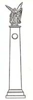

A
- C - D - J -
M - O - P - S
- T
A
| Aristote
(c. 384 - 322 av. J.-C.) |
 |
Aristote
est né en 385-384 avant J.-C. à Stagire, petite
ville de Macédoine,et mort à Chalcis en 322. Son
père Nicomaque était le médecin du roi
Amyntas II de Macédoine (le père de Philippe)
et descendant lui-même d’une famille de médecins.
En 367 ou 366, Aristote alla faire ses études à
Athènes et devint à l’Académie l’un
des plus brillants disciples de Platon. En 348, peut-être
sur l’instigation de son maître, Aristote fut envoyé
, en Troade, où il devint le conseiller politique et
l’ami du tyran Hermias d’Atarnée. Parallèlement,
Aristote ouvrit une école, où il affirma déjà
son originalité. Il y entreprit, entre autres, des recherches
biologiques. En 343-342, il est appelé à Pella,
à la cour du roi Philippe de Macédoine, qui lui
confia l’éducation de son fils Alexandre. À
la mort de Philippe (335-334), Alexandre monta sur le trône.
Aristote retourna à Athènes, où il fonda
le Lycée, ou Peripatos (sorte de péristyle
où l’on se promenait en discutant), école
rivale de l’Académie. Il y enseigna pendant douze
ans En 323, Alexandre mourut au cours d’une expédition
en Asie. Une réaction antimacédonienne se produisit
alors à Athènes. Aristote, en réalité
suspect de macédonisme, fut menacé d’un procès
d’impiété. Aristote aima mieux quitter Athènes
que d’encourir le sort de Socrat. Il se réfugia
à Chalcis, dans l’île d’Eubée,
pays d’origine de sa mère. C’est là
qu’il mourut l’année suivante, à l’âge
de soixante-trois ans. |
| Aulu-Gelle
(Aulus Gellius) (c. 125-128 - c.180 ap. J.-C.) |
|
Aussi
bien à Rome, où il apprit la littérature
(grammatica) et la rhétorique, qu’à
Athènes, où il étudia la philosophie, Aulu-Gelle
eut pour maîtres et amis de nombreux hommes de talent.
Il fut nommé juge dans un tribunal civil à Rome. |
| Ausone
(Decimus Magnus Ausonius) (309-310-394-395 ap. J.-C.) |
|
Né
à Bordeaux, écrivain, professeur et
homme d'état. Auteur notamment des Parentales, un
ouvrage qui brosse le portrait des membres de sa
famille. |
| Cicéron
(Marcus Tullius Cicero) ( 106 à 43 av. J-C) |
|
Cicéron
est né à Arpinum, en pays volsque, à une
centaine de kilomètres à l’est de Rome. Sa
famille, fort honorable, appartenait à l’ordre équestre
et comptait des magistrats municipaux et des officiers supérieurs
de l’armée; elle était en outre directement
alliée avec celle de Marius qui gérait alors son
deuxième consulat. Son grand-père, son père
et ses oncles, particulièrement cultivés, entretenaient
des relations avec les plus grands orateurs et les plus grands
juristes de Rome. Élevé dans un milieu lettré
et ouvert à la politique, le jeune Cicéron manifeste
très tôt des dons intellectuels éclatants.
Comme les jeunes sénateurs, il étudie la poésie,
la rhétorique et le droit; il s’intéresse
aussi, ce qui est moins fréquent, à la philosophie.
En 89, il est attaché à l’état-major
de Cneius Pompeius Strabo, père du grand Pompée,
pendant la guerre Sociale; sa famille ayant des sympathies chez
les partisans de Marius, il s’éloigne pour terminer
ses études en Grèce et à Rhodes. En 81,
il débute au barreau, puis, avec l’appui de la puissante
famille des Metelli, plaide contre un des affranchis de Sylla,
le tout-puissant Chrysogonus: ce discours, Pro Sexto Roscio
Amerino , n’est sans doute pas étranger à
l’abdication de Sylla. Cependant, il doit s’éloigner
encore une fois de Rome.
En 77, il épouse Terentia, d’une famille de la noblesse,
et aborde la carrière des honneurs. Il est élu
questeur en 76, à l’âge légal, et exerce
cette magistrature en Sicile et enn 66, il est préteur
urbain. En 64, un aristocrate décavé, Lucius Sergius
Catilina, ancien syllanien devenu démagogue, déjà
battu au consulat, réunit dans une conjuration hétéroclite
tous les mécontents et se propose, avec la complicité
de certains hauts magistrats et de nombreux sénateurs,
de s’emparer du gouvernement par l’émeute et
par la force. Cicéron, bien qu’homme nouveau, apparaît
aux conservateurs modérés comme le seul homme
capable de sauver la légalité. Il est triomphalement
élu consul pour 63, mais se heurte sur-le-champ à
la fois aux projets de Catilina, à l’inimitié
de la noblesse et aux manœuvres de César. Avec courage,
éloquence et habileté, il combat sur les deux
fronts, voulant éviter la guerre civile, empêcher
la subversion, faire pièce aux démagogues. Pour
cela, il s’appuiera sur l’opinion publique, sur une
partie du Sénat et sur l’ordre équestre qu’il
essaie d’associer aux décisions politiques de son
gouvernement moyennant quelques concessions de la part du Sénat
(Catilinaires ; Pro Murena ; Pro C. Rabirio ;
De lege agraria ). Le succès immédiat de
cette politique fait de Cicéron le sauveur de Rome, un
rival possible pour Pompée.
En 58, Cicéron, abandonné par les chefs de parti,
se refuse à déclencher la guerre civile et s’enfuit
à Brindes et en Grèce. Mais, en 57, c’est
le retour triomphal. Cependant Cicéron ne retrouve pas
son influence de jadis; il ne peut que louvoyer entre Pompée
et César. En 51, il est proconsul en Cilicie, où
il mène une campagne victorieuse contre les Parthes et
s’acquitte avec une grande honnêteté de ses
fonctions. À son retour, la guerre civile est menaçante.
Cicéron tente de s’y opposer, mais, en janvier 49,
malgré ses sympathies secrètes, il choisit la
légitimité et suit Pompée. Après
Pharsale, il regagne l’Italie et, sans se rallier ouvertement
à César, reprend son siège au Sénat
et presse César de rétablir la légalité
(Pro Marcello ). Il se consacre de plus en plus, cependant,
à ses travaux littéraires et philosophiques. Après
les ides de mars 44, il apparaît comme le plus prestigieux
des hommes politiques républicains, un point de ralliement
pour l’opinion égarée. Mais Antoine finit
par s’entendre, contre Cicéron, avec Caius Octavius,
le petit-neveu de César: lorsque Antoine, Octave et Lépide,
par un coup d’État, se font confier un «triumvirat
constituant», Cicéron figure au premier rang des
proscrits. Il meurt courageusement à Gaète.
Il a apporté l’éloquence latine à
son apogée: ses plaidoyés et ses discours ont
servi de modèle à toute la rhétorique latine
( De oratore, De inventione, Partiones oratoriae, De optimo
genere oratorum,...). Il fut aussi le premier homme d’État
à tenter de concilier les exigences de la pratique politique
et les résultats de la spéculation philosophique
(De Republica, De legibus, De officiis, De lege agraria, Pro
Murena, Pro Sestio, ...). De plus, l’œuvre philosophique
de Cicéron a exercé dans l’histoire de la
pensée occidentale une influence très profonde
. Il est apparu non pas comme un créateur mais comme
un médiateur, un honnête homme qui, parmi les doctrines
existantes, cherchait à définir non pas les plus
commodes, mais les plus fécondes pour un humanisme exigeant
( Paradoxa stoicorum, De finibus bonorum et malorum, Tusculanes,
De senectute, De amicitia, ...). |
| Crateros |
|
Crateros est un auteur grec originaire de Macédoine qui vécut vraisemblablement au IVe s. av. J.-C. Il rédigea un catalogue commenté des décrets athéniens du Ve s. av. J.-C. réparti en au moins neuf livres. Cet ouvrage n'est connu que par une vingtaine de fragments (Bibl. : D. Erdas, Cratero Il Macedone. Testimonianze e frammenti, Roma, 2002). |
| Denys
d’Halicarnasse (? - 8 ap. J.-C.) |
|
Contemporain
d’Auguste. Venu à Rome vers 30 av. J.-C., Denys
d’Halicarnasse y réside pendant vingt-deux ans.
Il étudie la langue, la littérature et l’histoire
romaines. Il enseigne probablement la rhétorique à
Rome comme il l’a fait à Halicarnasse. Il est l’ami
de membres de la haute aristocratie et, si l’on en juge
d’après les tendances reflétées par
ses écrits, sa sympathie va au patriciat. Il a composé
en grec des traités de rhétorique et de critique
littéraire et des ouvrages historiques. |
| Diodore
de Sicile (90 -fin du Ier s. av. J.-C.) |
|
Historien
grec, contemporain de César et d’Auguste, né
à Argyrium en Sicile. Les relations entre Rome et la
Sicile lui permettent d’apprendre la langue latine. Diodore
vit longtemps à Rome, qui est alors le véritable
centre de la pensée hellénique et la seule ville
à offrir aux écrivains, avec ses bibliothèques
publiques et ses écoles de philosophie et de rhétorique,
les moyens de travail qu’ils trouvaient jadis dans les
capitales des royaumes grecs. Diodore consacre sa vie à
la composition d’une histoire universelle en quarante livres,
qui va des temps mythologiques à Jules César,
et intitulée Bibliothèque historique. Pour acquérir
sur les lieux une connaissance plus complète que celle
des historiens précédents, il voyage beaucoup
en Europe et en Asie. Ainsi il mêlera ses propres observations
aux matériaux recueillis dans les livres qu’il compulse.
|
| Dion
Cassius (Cocceianus) (155 - 235 ap. J.-C.) |
|
Historien
grec, fils d’un sénateur romain et descendant par
sa mère de Dion Chrysostome; né à Nicée
(Bithynie) en 155 ap. J.-C., Dion Cassius est un homme politique
d’une certaine audience. Son père est gouverneur
de la Cilicie sous le règne de Commode (180-192); lui-même
est consul suffectus sous Septime Sévère
(193-211), puis consul ordinaire en 229. À partir de
cette date, il se consacre à la rédaction de son
Histoire romaine en quatre-vingts livres, dont nous possédons
un abrégé fait par Xiphilin. Dans sa vieillesse,
il retournera dans sa patrie. |
Julius,
cf Obsequens (Julius)
| Juvénal
(Decimus Junius Juvenalis) |
|
Né
à Aquinum (en Campanie) vers 60-65 ap. J-C (mort vers130
ap. J-C). De sa vie , on ne sait pas grand-chose, sauf qu’il
était le fils, véritable ou adoptif, d’un
affranchi au moins fort à son aise, qu’il passa,
selon Suétone, la moitié de sa vie dans la fréquentation
des rhéteurs, qu’il avait «déclamé»
longtemps avant de commencer à écrire, qu’il
eut Martial pour ami et qu’il fut peut-être exilé
vers la fin de sa vie. Célèbre poète satirique
latin, il brilla comme orateur avant d’être poète.
Ce fut sous Domitien qu’il composa ses premières
satires, mais il ne les publia que sous Trajan et Adrien. Un
histrion, favori de ce dernier, le fit exiler en Egypte avec
le titre de préfet d’une légion, prétendant
avoir été l’objet d’une allusion dans
une de ses satires. C’est là qu’il mourut âgé
de plus de 80 ans. Dans ses poèmes satiriques, il dénonce
les vices et les ridicules, il s’attaque contre les déformations
et les ignominies du temps présent (imputables notamment
aux influences de l’Orient et au progrès du cosmopolitisme),et
fait éloge des antiques vertus et prédication
de topiques moraux. Mais l’auteur n’attaque que des
morts. C’est surtout au moment où les Antonins s’efforcent
de remettre un peu d’ordre dans l’Empire que Juvénal
lance ses foudres. |
| Macrobe
(Ambrosius Theodosius Macrobius) |
|
L’activité
littéraire de l’écrivain latin se situe soit
au IVe siècle, soit au Ve siècle; elle reflète
les intérêts et les préoccupations des aristocrates
païens de cette époque face au triomphe du paganisme.
A part les Saturnales, il a également écrit
le Commentaire sur le Songe de Scipion ,
qui est une exégèse très développée
du fameux texte de Cicéron, qui fait appel à des
sources grecques néo-platoniciennes, notamment au commentaire
de Porphyre sur le Timée de Platon, pour
développer des théories sur la nature et la destinée
des âmes, sur la hiérarchie des êtres, sur
l’arithmologie et la cosmologie. L’ouvrage fut beaucoup
lu au Moyen Âge, notamment dans l’école de
Chartres, et joua un rôle important dans l’élaboration
des théories cosmologiques de l’époque. |
| Obsequens
(Julius) |
|
On
ignore où et quand vécut l’écrivain
romain Julius Obsequens: peut-être au Ier siècle
pensent certains, au IVe siècle selon d’autres.
Il a laissé un ouvrage, De prodigiis , relatant
les prodiges qui se sont produits avant et après les
événements marquants de l’histoire romaine. |
| Orose |
|
On
ne sait rien d’Orose avant 414 ap. J.-C. Cette année-là,
il débarque en Afrique. C’est un jeune prêtre
espagnol de Braga, entreprenant et à l’esprit vif.
Il a dû quitter précipitamment sa patrie pour échapper
aux sévices des Barbares. Cette fuite réalisait
inopinément un projet qu’il nourrissait depuis quelque
temps: venir consulter Augustin, évêque d’Hippone,
l’une des plus grandes autorités de l’Église
d’Occident. Les problèmes qu’Orose venait soumettre
au jugement de l’évêque d’Hippone concernaient
deux doctrines hétérodoxes qui agitaient l’Espagne.
Augustin répondit à cette démarche par
un bref traité Contre les priscillianistes et les
origénistes . Après un séjour
en Palestine, il revient à Hippone où il est chargé,
par Saint-Augustin, d’une deuxième mission: les
hommes sont sensibles aux moindres incommodités du présent
et oublieux des souffrances du passé. C’est ainsi
que l’on s’exagère les épreuves des
«temps chrétiens» et que l’on atténue
les malheurs et les détresses du passé païen
de l’humanité. Contre ces déformations, Orose
veut établir que la mort et la violence ont régné
dans le monde tant que «la religion qui prohibe le sang»
a été ignorée, qu’elles ont été
ébranlées lorsque cette religion est apparue,
qu’elles perdent leur empire avec ses progrès et
qu’elles disparaîtront avec son triomphe. Il écrit
Historiarum adversus paganos libri:
cet ouvrage était destiné à répondre
aux païens qui accusaient le christianisme d’être
la cause des malheurs qui affligeaient l’empire. C’est
une justification de la providence. |
| Paionios de Mendé |
|
Paionios de Mendé : sculpteur ayant vécu dans la seconde moitié du Ve s. av. J.-C. Il est notamment l'auteur d'une Niké édifiée à Olympie
 |
| Pline
(Caius Plinius Secundus) ( 23 - 79 ap. J.-C.) |
|
Pline
l’Ancien – ainsi nommé pour le distinguer de
son neveu et fils adoptif Pline le Jeune – fut parfois
appelé Pline le Naturaliste. Le seul ouvrage qui reste
de lui est en effet une Histoire naturelle . Et, malgré
l’importance de ses écrits historiques qui constituent
l’une des principales sources de Tacite, son «enquête
sur la nature» s’est imposée comme une sorte
de bilan du savoir de l’époque. Né à
Côme en +23 et mort à Stabies en 79, en voulant
observer le Vésuve.Chevalier romain, il fut un auteur
remarquablement fécond. Venu dans sa jeunesse de Côme
à Rome, il fut à l’école des rhéteurs,
selon la coutume, puis commença une carrière équestre,
dans l’administration impériale. En dépit
des lourdes tâches de sa carrière administrative,
Pline occupait la plus grande partie de son temps à des
lectures innombrables, dont il faisait des résumés.
Pline composa de la sorte trois livres sur l’éloquence,
huit livres sur «la manière correcte d’écrire»,
puis des ouvrages de biographie et surtout d’histoire:
vingt livres sur les guerres contre les Germains et trente et
un livres qui continuaient l’œuvre historique d’Aufidius
Bassus, lequel avait lui-même continué Tite-Live.
Nous ne savons pas exactement à quelle date Pline commençait
son récit, mais seulement qu’il y racontait le règne
de Néron. Ce livre, écrit sous Vespasien –
donc après la chute des Julio-Claudiens – est résolument
hostile à la dynastie déchue et surtout à
Néron. Ce sera l’une des sources de Tacite. La dernière
partie de sa vie fut consacrée à la vaste compilation
(trente-sept livres) que constitue l’Histoire naturelle
(Naturalis Historia ), publiée
en 77, avec une longue dédicace à l’empereur
Titus; immense travail où se trouvent résumées
toutes les connaissances de l’antiquité sur les
arts et les sciences. Richesse d’imagination et beauté
du style. On lui reproche cependant des déclamations
et quelquefois trop de concision. |
| Polybe
(c. 200-c. 118 av. J.-C.) |
|
Polybe
naquit à Mégalopolis en Arcadie vers 200 av. J-C.
Son père, Lycortas, succéda en 183 à Philopœmen
à la tête de la ligue Achéenne, qui regroupait
la plupart des cités du Péloponnèse. Il
reçut une formation militaire et fut, dès son
jeune âge, mêlé au jeu politique complexe
du parti de son père, visant à faire adopter aux
cités grecques une politique indépendante sans
pourtant quitter l’alliance romaine. Polybe fut l’un
des dirigeants de la ligue Achéenne au moment décisif
que fut la troisième guerre de Macédoine (171-168).
La victoire de Paul-Émile sur le roi Persée à
Pydna en 168 amena l’effondrement de la puissance macédonienne.
Les Achéens étaient restés neutres, mais
Rome décida cependant d’éliminer, parmi leurs
hommes politiques, tous ceux qui restaient soucieux d’une
certaine indépendance: mille otages durent être
livrés, et Polybe était l’un d’eux.
Il eut la chance de pouvoir se fixer à Rome, grâce
à l’appui du fils de Paul-Émile, Scipion
Émilien, âgé en 167 de dix-sept ans, qui
devint son élève et le fit entrer dans le «cercle
des Scipions»: la plus prestigieuse famille romaine du
temps regroupait des intellectuels grecs et participait activement
à l’hellénisation des milieux cultivés
de l’aristocratie romaine. L’exil de Polybe dura de
167 à 150 et, pendant ce temps, il fréquenta la
haute société romaine, observa le fonctionnement
de la vie politique et des institutions. Il eut accès
à d’importants documents, et obtint la permission
de voyager dans le sud de l’Italie, le sud de la Gaule,
l’Espagne.
En 150, les exilés purent rentrer en Grèce, mais
Polybe fut bientôt rappelé par Scipion Émilien
pour l’accompagner au siège de Carthage et l’aider
de ses conseils en matière de poliorcétique, art
d’investir les places fortes; il vit l’agonie et la
destruction de Carthage en 146. La révolte des Achéens
contre Rome, fort imprudente, survint alors; ils furent écrasés,
et Corinthe, capitale de leur ligue, totalement détruite.
Polybe s’efforça d’adoucir le sort des Grecs:
grâce à ses relations romaines, il fut chargé
lui-même de l’application du nouveau statut imposé
à la Grèce et il s’attira la reconnaissance
de ses compatriotes qui lui dédièrent des inscriptions
louangeuses dont certaines ont été retrouvées.
Polybe continua ses voyages et, probablement, participa en Espagne,
toujours aux côtés de Scipion Émilien, au
siège de Numance, en 133. Il mourut fort âgé,
vers 118 avant J.-C. |
| Sénèque
(Annaeus Seneca) (4 av. J-C à 65 ap. J-C) |
|
Né
à Cordoue, Sénèque dit l'Ancien vint à
Rome avec sa tante qui l’introduisit dans des cercles influents.
Il commença très tôt à s’intéresser
à la philosophie et il s’attacha à l’école
plus ou moins stoïcisante des Sextii ainsi qu’au stoïcien
Attalus. Après un long séjour en Égypte
avec son oncle et sa tante, il obtint peu après son retour
(31-32) une charge de questeur. L’empereur Claude l’exila
en Corse (41) sous le prétexte qu’il aurait eu des
relations adultères avec une sœur de Caligula, Julia
Livilla. En fait, il semble bien que Sénèque ait
été victime d’intrigues politiques. Agrippine,
après son mariage avec l’empereur Claude, le fit
rappeler d’exil (49) et lui confia l’éducation
de son fils Néron, le futur empereur. Au moment de l’assassinat
de Claude, Néron n’avait que dix-sept ans. Sénèque
se trouva donc être, en tant que précepteur du
jeune empereur, le véritable régent de l’Empire,
avec le préfet de la garde, Burrus. Dans les premières
années du règne de Néron, Sénèque
put exercer une bonne influence sur son disciple, et les effets
bienfaisants en furent ressentis dans l’ensemble de l’Empire.
Mais, avec le temps, Néron échappa à la
direction de son précepteur, et les difficultés
s’accrurent. Après la mort de Burrus (62), qui fut
probablement un assassinat, Sénèque se retira
de la vie politique et se consacra exclusivement à la
philosophie. Accusé d’avoir participé à
la conspiration de Pison, il se suicida sur l’ordre de
Néron. Il a écrit entre autres les traités
Des Bienfaits, De la colère,
De la clémence, De la tranquillité
de l’âme, De la brièveté de la vie,
De la constance du sage, De la providence, Questions Naturelles,
Lettres morales, Consolation à Helvia, et une dizaine
de tragédies. L’œuvre de Sénèque
constitue une source précieuse pour la connaissance de
la philosophie d’époque hellénistique et
impériale. Pour toute la période qui va de la
fondation de l’école stoïcienne, vers 300 avant
J.-C., jusqu’au Ier siècle après J.-C.,
ses écrits représentent la seule œuvre d’envergure
composée par un stoïcien qui nous soit parvenue
presque intégralement, sans être réduite
à l’état de fragments. |
| Soranos |
|
On
sait peu de choses sur la vie de Soranos. Il naît dans
la deuxième moitié du Ier s. après J.-C.
Il est originaire d’Éphèse. C’est là
où il commence ses études de médecine avant
de les poursuivre à Alexandrie. Devenu médecin,
il fait partie des “modernes” et exerce la médecine
à Rome, sous le règne des empereurs Trajan et
Hadrien. |
| Suétone
(Caius Suetonius Tranquillus) |
|
Il
naquit sans doute à Rome, vers 70 après J.-C.,
d’une famille de rang équestre. Son père
avait exercé des fonctions officielles de cet ordre.
Suétone, vers l’âge de trente ans, eut la
tentation de suivre son exemple et demanda à devenir
tribun militaire, condition indispensable pour poursuivre une
carrière administrative normale de chevalier. Mais il
renonça à sa charge presque aussitôt et
s’adonna à des recherches désintéressées
sur la rhétorique et l’histoire littéraire,
menant à Rome une vie très retirée. Il
était l’ami de Pline le Jeune, et c’est aux
lettres de celui-ci que nous devons les quelques détails
que nous possédons sur l’existence de Suétone.
Il avait renoncé, de très bonne heure, à
accepter de plaider des causes, comme il avait eu la tentation
de le faire en sa jeunesse. Suétone était un scholasticus ,
un homme de bibliothèque. Pourtant nous le voyons exercer
des charges importantes à la cour d’Adrien (après
117): secrétaire particulier, intendant des bibliothèques,
enfin chef de la correspondance impériale. Outre ses
recherches biographiques, portant sur les empereurs, les poètes,
les rhéteurs, les grammairiens célèbres,
Suétone s’intéressait aux sciences elles-mêmes,
autrefois pratiquées par les personnages dont il s’occupait.
Il s’adonnait à l’étude de la grammaire
et, en général, du langage, c’est-à-dire,
en pratique, du latin et du grec. De ces études sortirent
d’abord (sans doute vers 105?) les livres De viris illustribus ,
consacrés à des biographies littéraires.
Ce groupe de livres À la mort de Pline, son ami et son
protecteur, il devint le protégé de C. Septicius
Clarus, qui fut choisi par Adrien, vers 119, comme préfet
du prétoire. C’est Clarus qui fit appeler Suétone
à la cour impériale. Adrien, lui-même lettré,
aimait, semble-t-il, la compagnie de Suétone, et lui
ouvrit les archives impériales, où se trouvaient
des documents d’une valeur inestimable datant des premiers
règnes. Mais la carrière de Suétone fut
interrompue brusquement, en 121. Il fut disgracié «pour
s’être montré trop familier» avec l’impératrice.
Mais les trois ou quatre ans passés dans l’entourage
de l’empereur, l’accès aux secrets d’État
de l’ancien temps permirent à l’archiviste
secrétaire de rassembler les matériaux des Vitae
Caesarum , les Vies des douze Césars , qui
comprennent les biographies de Jules César, Auguste,
Tibère, Caius (Caligula), Claude, Néron, Galba,
Othon, Vitellius, Vespasien, Titus et Domitien, c’est-à-dire
tous les empereurs qui avaient précédé
l’établissement de la dynastie antonine, à
laquelle se rattachait Adrien.
On ignore ce que fut la vieillesse de Suétone. On peut
penser qu’il l’occupa à poursuivre ses savantes
études dans le silence des bibliothèques romaines.
Il mourut en 140 ap. J-C. |
| Tacite
(Caius Publius Cornelius Tacitus) (c. 56 - c. 120 ap. J.-C.) |
|
Tacite
grandit dans un moment décisif pour l’Empire. Il
est né, sans doute, vers 55, sous Néron; en 68,
ce prince va être renversé; avec lui disparaîtra
la dynastie purement romaine des Julio-Claudiens. Ce sont les
généraux des provinces qui, avec leurs armées,
feront à partir de leurs cantonnements une sorte de course
vers Rome où Vespasien saura arriver le dernier. Ainsi
s’imposent deux évidences nouvelles: c’est
l’Empire désormais, et non plus Rome seule, qui
fait les empereurs; d’autre part, cet Empire est traversé
de courants violents et opposés qui mettent en question
l’unité même du monde civilisé telle
que l’avait établie la conquête romaine. Il
faut donc préserver l’Empire pour assurer l’unité.
Tacite prend, un siècle à l’avance, une forte
conscience de ce danger, du fait qu’il est originaire des
Gaules (Cisalpine ou Transalpine?). L’Empire se tourne
alors volontiers vers cette région pour apporter un sang
neuf à l’Italie et pour tempérer l’influence
grandissante de l’Orient hellénisé. L’Espagne
aussi joue un grand rôle, depuis la chute de Néron
jusqu’à l’avènement de Trajan; et les
Antonins seront d’origine nîmoise. Tacite a pu observer
la rencontre de tous ces courants depuis ce lieu de passage
qu’est Fréjus . cet «homme nouveau»
fait une belle et rapide carrière, qui le conduit très
jeune à la plupart des hautes charges. Il les obtient
d’abord sous Vespasien, et il arrive à la préture
sous Domitien en 88. Cette carrière brillante (qui atteste
que l’historien est aussi un homme d’action) ne comporte
jamais de grands commandements militaires. C’est principalement
le prestige littéraire et moral de Tacite qui semble
avoir assuré sa réussite. Il attachait beaucoup
de prix au fait d’avoir compté parmi les quindecemvir
qui avaient présidé en 88 aux cérémonies
religieuses commémorant et renouvelant la fondation de
Rome. tout en étant l’ ami de l’Empire, et
surtout de Rome, il sera un juge sévère des empereurs
qu’il a souvent servis (pour servir Rome) mais qu’il
a toujours critiqués. Il ne nous reste de lui qu’une
partie de ses Annales, d’Histoires, la Vie d’Agricola
(dont il épousa la fille en +79), les Moeurs des Germains
et un Dialogue sur l’éloquence, attribué
aussi à Quintilien. L’œuvre de Tacite pose
aux lecteurs modernes, aux savants, aux lettrés, de nombreux
problèmes. Certes, tous s’accordent à en
reconnaître l’extrême beauté littéraire.
Tacite apparaît bien comme «le plus grand peintre
de l’Antiquité»; mais on lui adresse un reproche
très grave: on conteste sa valeur d’historien, on
nie à la fois son objectivité et la rigueur de
son information, on se défie de ce témoin trop
passionné. D’autre part, les choses sont rendues
plus complexes par certaines difficultés d’interprétation:
le style de Tacite recherche volontiers l’obscur et l’ambigu. |
| Tibulle:
(Albius Tibullus) (c. 55/48 - c. 19 av. J.-C.) |
|
On
ne possède guère de renseignements sur sa vie.
Il appartenait à une famille riche, mais qui fut ruinée,
sans doute au cours des guerres civiles. On ne sait rien de
son père. Tibulle ne parle que de sa mère et de
sa sœur, auprès desquelles il semble avoir passé
sa jeunesse en Latium, dans le petit bourg de Pedum (entre l’actuel
Tivoli et Palestrina). En 32 avant J.-C., Tibulle, parvenu à
l’âge d’homme, doit s’arracher à
sa vie de loisir et est attaché à la cohors praetoria ,
l’état-major de Valerius Messalla, alors consul
désigné et sur le point de partir en Orient, pour
participer à la guerre contre Antoine et Cléopâtre.
Sur ces entrefaites, Tibulle, à Rome, fait connaissance
d’une jeune femme, qu’il appelle Delia, et qui s’appelait,
croit-on, Plania. Elle vivait librement, et choisissait des
«protecteurs» successifs. Tibulle l’aima tout
de suite profondément, pensant à l’épouser.
Mais le moment de partir pour l’Orient approche. Tibulle
s’y résigne. Il va, avec Messalla, jusqu’à
Corcyre, où il tombe assez gravement malade pour qu’on
le laisse dans l’île. Remis, tant bien que mal, il
revient à Rome; il y trouve déception et chagrin.
Delia ne lui ouvre plus sa porte ! En 28 avant J.-C., Messalla,
de retour d’Orient, est chargé d’un commandement
en Gaule. Le poète, revenu de sa passion, l’accompagne
et participe au rétablissement de l’ordre, troublé
par un soulèvement en Aquitaine. Il était à
Rome pour le triomphe de Messalla, le 25 septembre 27. Désormais,
il vécut à la campagne et se consacra à
la poésie.Tibulle mourut à peu près en
même temps que Virgile, Ovide assistait à ses funérailles
où, dit-il, se trouvaient également Delia et Nemesis.
On possède trois livres de poèmes élégiaques
signés du nom de Tibulle. Le premier seul a été
publié du vivant de l’auteur. Le deuxième
rassemble des pièces authentiques, probablement éditées
après sa mort. Le troisième réunit des
poèmes écrits par divers amateurs. |
| Tite-Live
(Titus Livius) (c. 59 av. J.-C.- c. 17 ap. J.-C) |
|
Il
naquit à Padoue , d’une famille de bonne condition.
Il vint à Rome dans son adolescence pour y recevoir l’enseignement
des rhéteurs et des philosophes. Il se refusa à
suivre une carrière politique, peut-être en raison
des temps troublés que Rome traversait alors. Jouissant
d’une totale indépendance, il s’adonna à
l’étude. Contemporain d’Auguste (qui était
né en 63), témoin de la formation de l’empire,
il contribua à redonner à ses contemporains le
sentiment de la grandeur romaine, que les guerres civiles pouvaient
faire oublier. Il a laissé une Histoire romaine ( dont
le titre semble avoir été Ab urbe condita libri)
de la fondation de Rome jusqu’à -9 (mort de Drusus)
en 140 livres, dont seulement 35 nous sont parvenus. Son récit
est clair, pur et bien ordonné. Il utilise, outre les
historiens antérieurs, les anciennes annales de Rome
et s’efforce de faire revivre le passé romain dans
un style vivant. Cette œuvre immense paraît avoir
été commencée entre 29 et 25 avant J.-C.,
c’est-à-dire alors que le régime d’Auguste
commençait d’apparaître comme solidement établi
et que l’on en discernait l’esprit, fondé sur
le sentiment de la tradition nationale, la continuité
de Rome et de ses valeurs morales essentielles (dévouement
à la patrie, sobriété, endurance). De plus,
Tite-Live avait le sentiment qu’une ère de la vie
de Rome s’était close avec la fin des guerres civiles
et qu’un nouveau cycle commençait, qui ne mettrait
pas en jeu les mêmes forces, ne poserait pas les mêmes
problèmes aux hommes d’État. À cet
égard, l’Histoire de Tite-Live est un bilan,
en même temps qu’une épopée. |
|